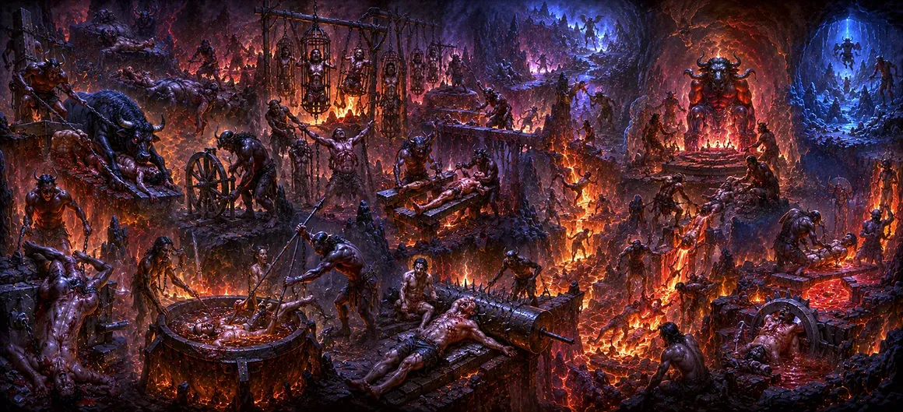

The Specific Torments and Experiences in Hell
While earlier teachings established the external boundaries and structural classifications of the subterranean worlds, this discourse focuses intensely on the psychological, emotional, and sensory interiority of the suffering soul. Transitioning from external geography to internal reality, this text reveals how universal law meticulously administers corrective adjustments to consciousness through structured sensory stimuli.
At the absolute center of this transformative ordeal is the Yatana Sharira—a specialized subtle organism configured explicitly for feeling acute distress without experiencing physical collapse or unconsciousness. This chapter unpicks the exact mechanics of how past adharmic actions translate into intense physical feedback, psychological remorse, and the ultimate shattering of egoistic delusion before the soul is permitted to migrate toward future rebirths.
Core Experiential Highlights
Regenerative Pain Vehicle
Examines how the Yatana Sharira continuously recovers to absorb full karmic momentum.
Elemental Sensations
Explores how fire, ice, pressure, and sharp edges act directly upon subtle nerve pathways.
Agony of Memory
Highlights how clear memory of wasted earthly opportunities doubles the soul's suffering.
Precision of Retribution
Shows that punishment intensity matches the exact degree of harm caused in life.
Ego Dissolution
Details how intense corrective pressure systematically breaks down stubborn earthly arrogance.
Karmic Equilibrium
Explains the restoration of cosmic balance as accumulated negative imprints are completely exhausted.
Core Topics in This Text
- 01 Mechanics and Endurance of the Yatana Sharira →
- 02 Sensory Dynamics of Fire, Ice, and Pressure →
- 03 Psychological Remorse and the Burden of Earthly Memory →
- 04 The Systematic Dissolution of Earthly Ego →
- 05 The Exhaustion of Karmic Debt and Universal Order →
- 06 Transitioning from Purification to Virtue →
Mechanics and Endurance of the Yatana Sharira
This teaching provides an intricate analysis of how suffering is experienced within the nether realms through the creation of the Yatana Sharira. When a living entity sheds its gross physical vehicle at the time of death, its accumulated negative karma dictates the formation of this subtle, pain-bearing body. Unlike mortal flesh, which succumbs to shock, trauma, or organ failure under extreme stress, the Yatana Sharira is constitutionally engineered to remain completely conscious across profound levels of torment.
The text emphasizes that this vehicle possesses extraordinary resilience. Even when subjected to searing heat, freezing cold, or severe laceration, the subtle tissue matrix instantly binds back together. This ensures that the corrective feedback loop remains unbroken, allowing the soul to fully absorb the exact magnitude of energetic disturbance it generated during its earthly tenure without premature unconsciousness interrupting the process.
Sensory Dynamics of Fire, Ice, and Pressure
The elemental forces governing the various compartments of Naraka function with amplified psychological and physiological precision. Intense thermal heat targets the root of blinding greed and burning desires, freezing vacuums counteract emotional callousness, and heavy mechanical pressures crush residual worldly arrogance. These elements do not operate as instruments of malice or revenge; rather, they act as cosmic purificatory agents, interacting directly with the subtle nervous system (nadis) of the Yatana Sharira.
Every searing sensation corresponds directly to specific violations of cosmic order (dharma) committed in physical life. By confronting these elemental realities in an unshielded state, the soul’s consciousness is systematically scrubbed of the gross energetic residue left behind by harmful actions, preparing it for future spiritual evolution.
Psychological Remorse and the Burden of Earthly Memory
Beyond physical and elemental feedback, Uma Samhita highlights a far more piercing dimension of suffering: the unyielding clarity of memory. In the nether realms, the veil of forgetfulness that characterizes mortal existence is completely lifted. The soul retains vivid, uninterrupted recall of every action, thought, and intention from its recent incarnation on Earth.
This lucid remembrance forces the jiva to witness its past misdeeds from an objective perspective. Watching how its selfishness caused pain to innocent beings, violated sacred trusts, or ignored higher spiritual pursuits generates profound psychological agony. This internal remorse operates as an essential catalyst, melting away self-justification and breaking down the psychological barriers obstructing true repentance.
The Systematic Dissolution of Earthly Ego
A major theme elaborated in this text is the systematic dismantling of the ego (Ahamkara). During physical life, human beings often construct impenetrable layers of pride, false identity, entitlement, and material attachment. These heavy psychological constructs act as anchors, preventing consciousness from aligning with universal truth or higher spiritual frequencies.
The severe, uncompromising environment of Naraka acts as a spiritual furnace. Under the relentless pressure of systemic purification, stubborn layers of ego are systematically burned away. Stripped of all external status, physical beauty, wealth, and worldly power, the soul confronts its fundamental nakedness, paving the way for true spiritual humility in subsequent cycles of evolution.
The Exhaustion of Karmic Debt and Universal Order
Crucially, the scripture reassures the reader that the suffering experienced in Naraka is strictly finite and regulated by the supreme cosmic order known as Rta. There is no concept of arbitrary cruelty or eternal damnation within the Shiva Purana framework. Every single unit of pain administered through the Yatana Sharira corresponds precisely to the mathematical weight of negative samskaras accrued in the physical world.
Once the karmic debt is completely balanced and exhausted through this intensive experiential processing, the energetic load on the subtle body is neutralized. The soul’s turbulent vibrations settle down, marking the conclusion of its purification and preparing it for release from the nether realms toward higher evolutionary planes.
Transitioning from Purification to Virtue
Having meticulously mapped out the mechanics of karmic retribution, sensory pain, and psychological reform in hell, this section brings the analytical phase to a close. The text successfully demonstrates that while suffering serves as an efficient corrective mechanism for unspent adharma, it is a harsh and grueling path for the soul.
This sets the stage for the next phase of the Purana. The narrative shifts focus from post-mortem correction to proactive earthly virtue, introducing the reader to the sacred glory of giving food and showing how acts of selfless charity, compassion, and dharma during human life can neutralize heavy karmic debts proactively, sparing the soul from ever needing to traverse the harrowing corridors of Naraka.
Spiritual Insight
This text teaches that the torments of Naraka are not expressions of wrath, but rather a clinical, restorative process of energetic realignment. The intense distress endured by the Yatana Sharira is the inevitable backflow of harm inflicted upon the cosmic web of life. By cultivating conscious awareness, practicing radical compassion, and surrendering our ego to Lord Shiva during our earthly tenure, we voluntarily burn through negative samskaras, mastering our inner nature and rendering nether purification entirely unnecessary.
Frequently Asked Questions
① What is the main focus of this section in Uma Samhita?
This section explores the subjective sensory experiences, psychological remorse, ego dissolution, and internal mechanics of the Yatana Sharira undergoing karmic purification.
② Why does the Yatana Sharira not perish under extreme physical torments?
The Yatana Sharira is a subtle constitution engineered specifically for processing karmic feedback. It lacks perishable gross physical organs, allowing it to continuously regenerate and absorb precise degrees of pain until negative impressions are cleared.
③ What role does psychological memory play in Naraka?
The soul retains vivid, unclouded memories of its earthly existence. Reviewing past wrongdoings, missed spiritual opportunities, and harm inflicted on others creates acute mental anguish that works alongside physical suffering to break down arrogance.